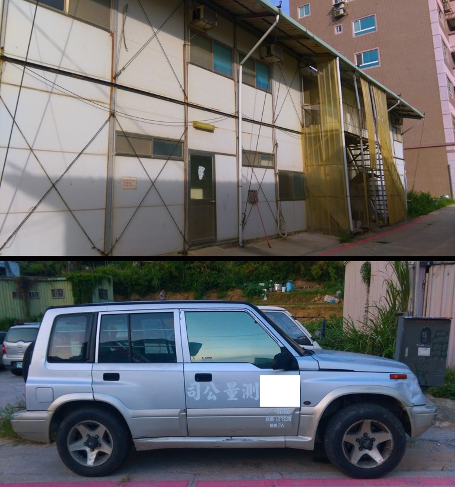
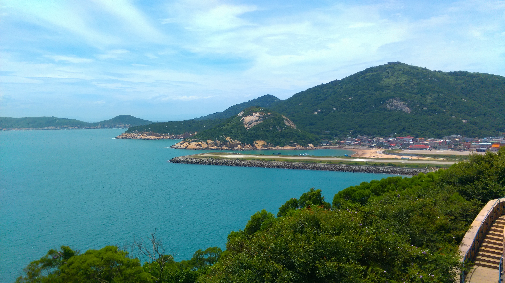
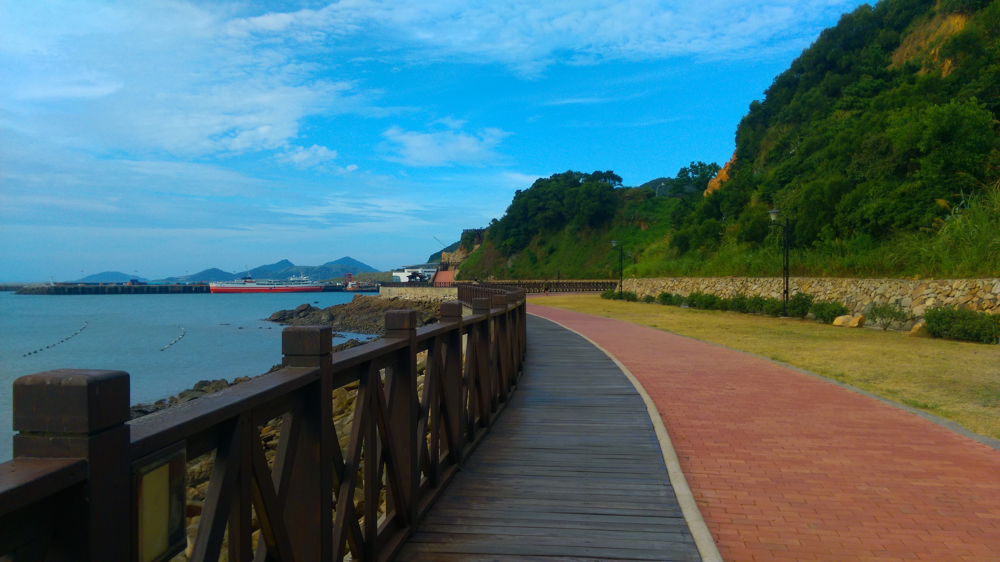

2016/08/05
這禮拜跟著公司一起到馬祖的南竿與北竿測量，是馬祖的觀光局委託，為了申請使用執照而須做建物測量，很多都是過去留下來的軍事設施，未來這些將會規劃為觀光景點或是做為民宿的使用。我們在這裡住在清水村裡的一個組合屋，是之前在這邊工地的工人留下的。第一天的早上先去現場看，下午才開始測量，老闆也利用空檔的時間帶我到處逛逛，馬祖到處都是高高低低的山、蜿蜒曲折的路以及險坡，一邊是山另一邊就看的到美麗的海景，跟台灣本島東部的景色有幾分相像。

因為過去馬祖曾是重要的戰略位置，隨處可見碉堡、坑道等軍事設施以及抗戰的標語，戰地文化相當濃厚。晚上還遇上一年只有一次的「萬平演習」，在馬港的夜間射擊，首先會發射幾顆照明彈，接下來就有子彈從四面八方飛出，在空中劃出一道道的軌跡，非常壯觀，第一次來就遇上實在是太幸運了!

隔天跟著大家到北竿，老闆讓我自己到處玩，在芹壁聚落漫步了一個早上，由於今天是平日鮮少遊客，因此可以很悠閒的欣賞這片美麗的風景，少了人聲的嘈雜，好像在荒蕪人煙的仙境，層層疊疊的花崗石建築，依山勢呈階梯狀排列，錯落有致，像聖托里尼般浪漫。下午回南竿，老闆開車帶我到媽祖神像上就離開去別處測量，讓我自己走步道下山到馬港，雖然沒有遊客，山裡的風景顯得更清幽美麗，但獨自一人還是讓我非常驚嚇，擔心會在山裡迷路或是遇到傳說中的老奶奶或是紅衣小女孩，好在有媽祖保佑我也順利下山了!!!馬港與介壽都是馬祖比較繁榮的地方，光武街道是馬港最熱鬧的地方，統一規格的招牌讓整個街道的視野看起來清爽，也是在台灣本島比較少看到的。


第三天老闆讓我自己搭公車去玩，這天只去了津沙聚落與介壽，因為馬祖的公車實在太難等了，較少人的地方可能兩、三個小時才有一班公車經過，非常不方便，在馬祖若是不會騎車開車，要去什麼地方都會相當的不便。在介壽的岸邊有看到一片螢光橘的海水在岸邊漂，一開始以為是汙染，後來偶然聽到有人說到岸邊橘紅色的現象，就是藍眼淚在白天看到的樣子，感到非常驚奇，雖然沒機會看到藍眼淚，但在白天能看到這景象也是滿難得的。

這周來馬祖似乎是觀光居多，不過真的很感謝老闆還有叔叔們願意帶我來，還會利用空檔開車帶我到處逛逛，也有教我該怎麼測量、如何看地形圖等等，這幾天是我暑期實習中最快樂難忘的回憶!